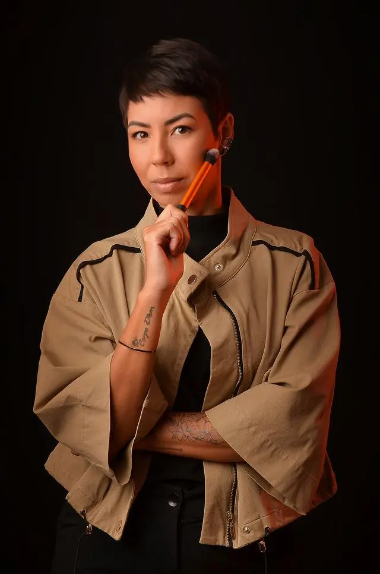

Consulta Completa
Nuestro primer paso de conexión. El momento perfecto para que conozca su personalidad, deseos y alinee todas las inspiraciones para su boda, brindando tranquilidad desde el primer contacto.
Maquillaje y peinados de larga duración para Novias, Quinceañeras y Ocasiones Especiales en Río de Janeiro. Una experiencia de belleza a medida para tu gran día.
Iniciar Consulta

Creando belleza de lujo desde 2015, Sue Lima ha construido una carrera distinguida, incluyendo 5 años como miembro clave del equipo oficial de caracterización y maquillaje de Fox Sports TV. Su experiencia está respaldada por formación internacional en la prestigiosa Make Up For Ever Academy de Nueva York, especializándose en técnicas de alta durabilidad para eventos importantes.
"Tu belleza es única. Mi misión es traducir tu esencia en un look sofisticado y atemporal con un acabado impecable, haciéndote sentir la versión más extraordinaria de ti misma."
Maquillaje y caracterización oficial de Fox Sports.
Formada en Make Up For Ever Academy NY.
Durabilidad de 16h+ resistente al sudor, calor y lágrimas.
Dedicación exclusiva todo el día solo para ti.
Un proceso paso a paso diseñado para brindar seguridad, comodidad y resultados impresionantes.
Nuestro primer paso de conexión. El momento perfecto para que conozca su personalidad, deseos y alinee todas las inspiraciones para su boda, brindando tranquilidad desde el primer contacto.
Realizada entre un mes y diez días antes de la boda. Probamos exhaustivamente el cabello y maquillaje elegidos, asegurando que todo quede impecablemente perfecto y tal como siempre soñó.
Una producción exclusiva, sin prisa. Uso de productos importados, hipoalergénicos y a prueba de agua, con asesoría completa en la colocación del velo, corona y vestido, además de soporte técnico para las fotos del making of.
Servicios ejecutados con productos del más alto estándar internacional.
Paquetes exclusivos de novia (Master, Diamond y Gold) con exclusividad total de fecha. Servicio personalizado y tranquilo con asesoría completa hasta la apertura de la pista de baile.
Producción completa para fiestas de XV años. Incluye prueba, asesoría técnica con tocados y apoyo para cambios de vestuario durante el evento.
Maquillaje social refinado y peinados personalizados para damas de honor, graduadas e invitadas VIP. Belleza de larga duración con sofisticación técnica.
Belleza impecable y lista para cámara para sesiones fotográficas, campañas de moda, editoriales y branding personal profesional.
Consultoría de belleza e imagen en set de grabación con captura de behind the scenes, reels y contenido dinámico listo para tus redes sociales.
Transformaciones reales y resultados de nuestras clientes premium.


Experiencias reales compartidas por clientes en Google Business.
"¡Simplemente amé mi maquillaje! Quedó hermoso, natural y duró todo el evento. Además del talento, es una profesional muy atenta, cuidadosa y puntual. Me sentí súper segura y aún más hermosa. ¡La recomiendo muchísimo!"
"¡Sue es una profesional maravillosa! Además de tener una gran técnica y crear looks preciosos, es extremadamente atenta y hace mucho más que una producción de belleza: nos hace sentir muy bien durante todo el proceso. ¡Apoyo admirable!"
"¡Me hizo el cabello y el maquillaje y el resultado fue increíble! Acabado hermoso y natural, nada pesado. El maquillaje duró toda la noche intacto y los productos fueron todos de gran calidad, ¡mi peinado se mantuvo hasta el día siguiente!"
"¡Sue es una persona que hace todo con excelencia! Confío en ella con los ojos cerrados, siempre me reciben muy bien y me escuchan. ¡Solo con hablar ella ya sabe lo que quiero y lo reproduce aún mejor de lo que imagino. Entrega el mejor trabajo!"
"Hace años que me hace el cabello y el maquillaje con Sue. Para todo tipo de eventos, bodas y graduaciones. Muy profesional y comprometida. ¡Todos los productos que usa son de la mejor calidad, además de una excelente durabilidad!"
"¡Sue es maravillosa y atenta a nuestros deseos! Tenía miedo de quedar con la gris y ella lo hizo perfecto, muy consistente con mi tono de piel. Recomiendo con los ojos cerrados, ¡especialmente para piel negra!"
Todo lo que necesitas saber para planificar tu experiencia de belleza nupcial con total tranquilidad.
Recomendamos reservar con 6 a 12 meses de anticipación. Para garantizar dedicación absoluta, aceptamos exclusivamente una novia por fecha, lo que significa que las fechas de temporada alta se llenan rápidamente.
La prueba se realiza entre 15 y 30 días antes del día de la boda. Probamos exhaustivamente el maquillaje y peinado elegidos, asegurando la armonía completa con el vestido, velo, accesorios e iluminación del lugar.
¡Sí! Llevamos un estudio profesional completo, incluyendo iluminación calibrada, protocolos de higiene estériles y productos de lujo, directamente a tu ubicación en Río de Janeiro o para Bodas Destino en el extranjero.
Es una metodología avanzada de preparación y sellado de la piel, diseñada para climas tropicales y costeros. Ofrece alta resistencia al calor, la humedad, las lágrimas y los abrazos, manteniendo tu maquillaje impecable por más de 16 horas.
Trabajamos exclusivamente con marcas de lujo de alto rendimiento, dermatológicamente probadas, incluyendo Dior, MAC, Make Up For Ever, Charlotte Tilbury, NARS, Kryolan y Atelier Paris.